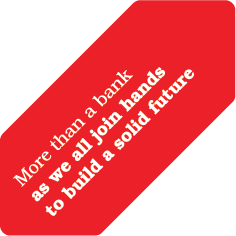
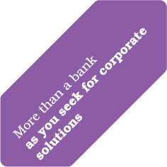
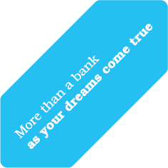
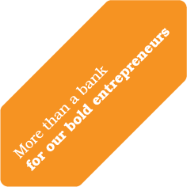
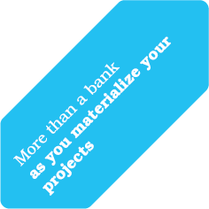
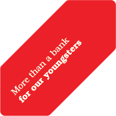
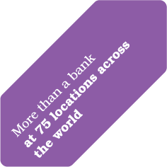
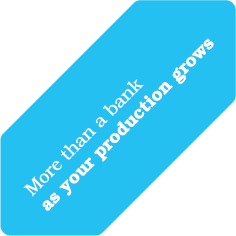

2012 Annual Report
Home Page
Introduction
Management and Corporate Governance Practices
Financial Information and Risk Management
Türkçe
Our Vision, Our Mission
Corporate Profile
Financial Indicators
Ziraat Bank's Market Shares - 31 December 2012
Ziraat Bank's Shareholding Structure and Amendments to the Articles of Incorporation During the Reporting Period
Together, to a Better Future...
Headlines from the History of Ziraat Bank
Chairman's Message
General Manager's Message
Macroeconomic and Sectoral Outlook
An Assessment of 2012: Strategies, Developments and Targets for the Future
Social Responsibility Activities
Ziraat Bank's Subsidiaries in 2012
The Report on Compliance of Annual Report
Ziraat Bank Board of Directors
Ziraat Bank Senior Management
Summary of the Board of Directors Report
Human Resources Practices
Information on the Activities of Committees
Attendance by the Members of the Board of Directors and of the Audit Committee in the Meetings Held During the Reporting Period
Related Party Transactions
Companies from Which Support Services are Obtained
Statutory Auditors Report
Audit Committee's Assessment of the Operation of the Internal Audit, Internal Control, and Risk Management Systems
Publicly Announced Unconsolidated Financial Statements together with Independent Auditor's Report at 31 December 2012
Ziraat Bank's Financial Standing, Profitability and Solvency
Ratios
Risk Management Policies Adhered to According to Types of Risk
31 December 2008 – 31 December 2012 Summary Balance Sheet and Income Statement
Credit Ratings Assigned by Rating Agencies
Publicly Announced Consolidated Financial Statements together with Independent Auditor's Report at 31 December 2012
       